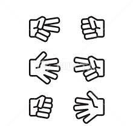

Edward's corner
Goals:
Hello and welcome to my website, Here i will showcase
many coding projects in lots of different languages once
I have completed them In particular i aim to make a program that will pull the location of the ISS
and plot it on a 3D map of Earth, I also want to make a BTD6 AI that using machine learning
will be able to pass round 170. I also aim to make a chess AI. Below you can see a selection of basic python
projects that i have built so far, feel free to play with them.

Project
Rock Paper Scissors
Description
A simple Rock Paper scissors game made in python
Chess Ai